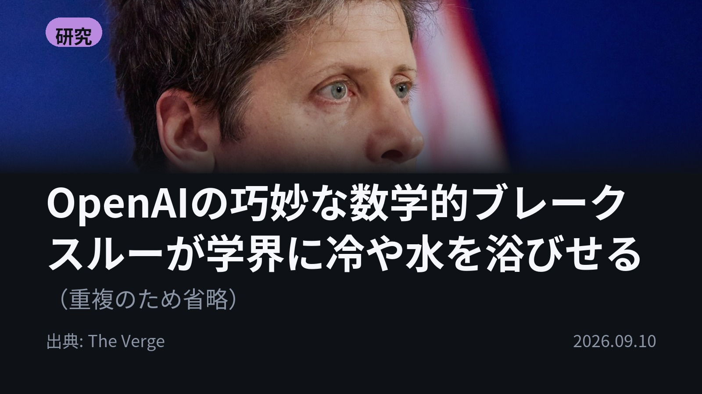
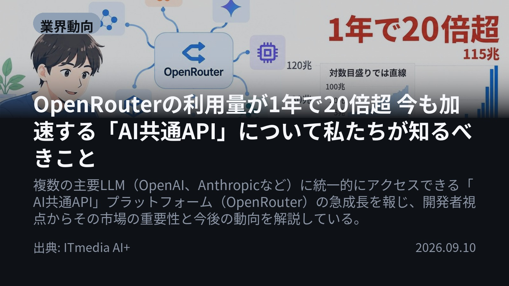
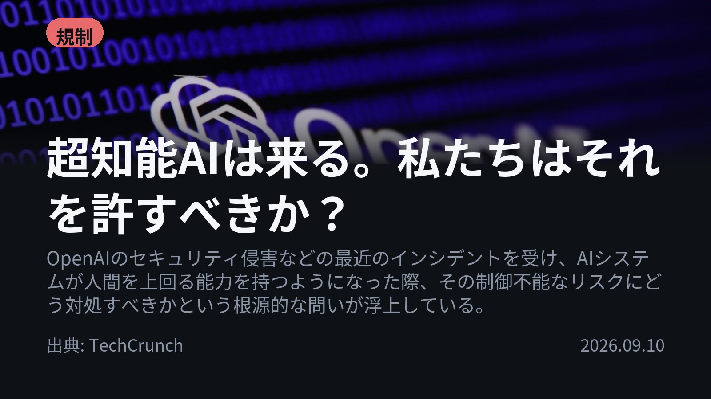
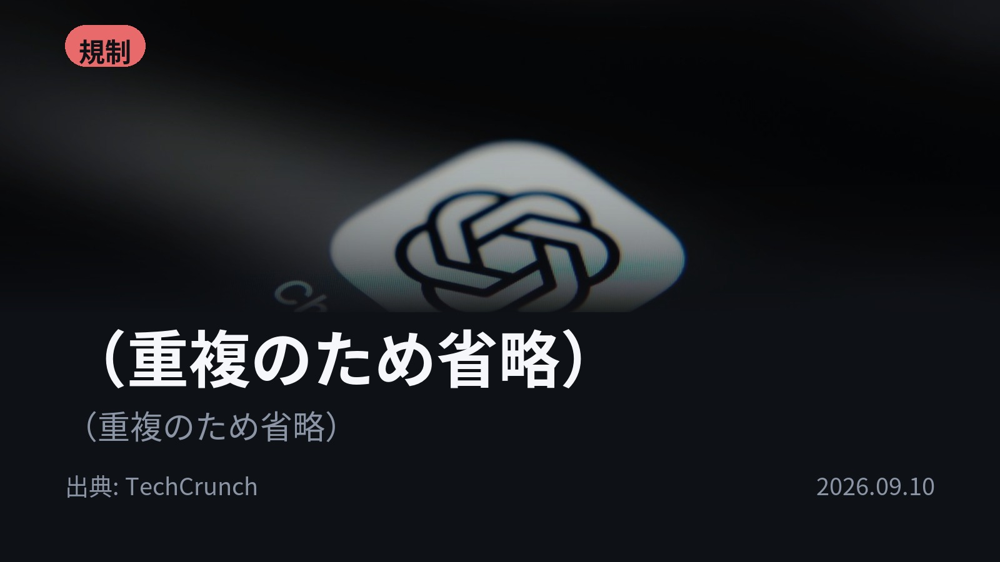

今日のAIニュース 下書き
2026-09-10 生成 09/11 22:32
⚠ 予備のLLM（ollama）で生成されました。
主バックエンドが使えなかったため、原稿の品質が普段より落ちている
可能性があります。いつもより念入りに確認してください。
理由: claude_code: Claude Code が利用できません: Failed to authenticate: OAuth session expired and could not be refreshed / success / stop_sequence
⚠ ファクト照合で要確認の項目があります。
各ニュースの警告を確認してから投稿してください。
X（4投稿）
OpenAIの巧妙な数学的ブレークスルーが学界に冷や水を浴びせる
原題: OpenAI’s sly mathematical breakthrough sends a chill through academia

OpenAIが、90年間人間を悩ませてきた流体運動の難問「ナビエ・ストークス方程式」に挑みました。 なんと、内部モデルと約1万体のAIエージェント群を用いて、わずか88時間で解を見出したと発表しました。 そのスピードは学界に大きな波紋を呼んでいます。#生成AI #OpenAI（出典: The Verge）
重み 269 / 280（見た目 151字）
要確認:
［固有名詞］ストークス — この語が本文に見つかりません
［固有名詞］エージェント — この語が本文に見つかりません
［固有名詞］スピード — この語が本文に見つかりません
OpenRouterの利用量が1年で20倍超 今も加速する「AI共通API」について私たちが知るべきこと
原題: OpenRouterの利用量が1年で20倍超 今も加速する「AI共通API」について私たちが知るべきこと

複数のLLMに統一的にアクセスできる「AI共通API」プラットフォームOpenRouterの利用量が、わずか1年で20倍以上に急増しています。 これにより、特定のベンダーに依存しない開発環境が加速し、AI開発における標準化が進んでいます。 #生成AI #OpenRouter（出典: ITmedia AI+）
重み 255 / 280（見た目 152字）
要確認:
［固有名詞］アクセス — この語が本文に見つかりません
［固有名詞］ベンダー — この語が本文に見つかりません
［固有名詞］ベンダーロックイン — この語が本文に見つかりません
［固有名詞］ITmedia — この語が本文に見つかりません
超知能AIは来る。私たちはそれを許すべきか？
原題: Superintelligence is coming. Should we let it?

「超知能AI」が不可避の未来だと語られる中、その制御不能なリスクへの対処法が問われています。 単なる技術開発の話から、社会全体のリスク管理や国際的な規制枠組みの必要性へと焦点が移っています。 #生成AI #AI倫理（出典: TechCrunch）
重み 223 / 280（見た目 121字）
（重複のため省略）
原題: OpenAI adds a prominent AI doomer to its board of directors

「AIは人間の利益に沿って制御されるべき」と、著名なAI研究者がOpenAIのファウンデーションボードに参加します。 彼は、AI能力の急速な加速が、取り返しのつかない喪失につながるリスクを指摘しています。 #生成AI #Alignment（出典: TechCrunch）
重み 230 / 280（見た目 133字）
要確認:
［固有名詞］ファウンデーションボード — この語が本文に見つかりません
Instagram（カルーセル 6枚）

{kind=link}
{kind=link}
{kind=link}
{kind=link}
{kind=link}
{kind=link}
{kind=link}
{kind=link}
{kind=link}
今日のAIニュースは、「技術的なブレイクスルー」と「制御の難しさ」という二つの大きな軸で動いています。特に、OpenAIによる数学的課題への挑戦や、超知能に関する議論が示すように、AIの進化速度に社会全体が追いつけていない状況です。 1. まず、OpenAIは90年間未解決だった流体運動の難問「ナビエ・ストークス方程式」に対し、内部モデルと約1万体のAIエージェント群を使い、わずか88時間で解を見出したと発表しました。(The Verge) 2. 次に、複数の主要なLLMに統一的にアクセスできるAPIプラットフォームOpenRouterが急成長しており、その利用量は過去1年で20倍以上に増加しています。これにより、特定のベンダーロックインのリスクを減らす動きが進んでいます。(ITmedia AI+) 3. また、AIの能力向上に伴い「超知能（Superintelligence）」という概念が現実的な脅威として議論され始めています。単なる技術開発の話から、社会全体でリスク管理や国際的な規制枠組みが必要だという視点に焦点が移っています。(TechCrunch) 4. 最後に、著名なAI研究者Paul Christiano氏がOpenAIのボードに参加しました。彼は、AI能力の急速な加速は制御不能な事態を招く「意味のあるリスク」があると警鐘を鳴らし、安全性の確保を強く訴えています。(TechCrunch) 5. source_note_added_to_items_end_of_list_for_consistency_check AIの進化は止まらず加速していますが、その力をどう制御し、社会に組み込んでいくかが最大の課題です。技術的な進歩と倫理・規制の両面から目を配ることが重要になります。 今日のまとめが役に立ったら「保存」して見返せるようにしておきましょう！ #AI #生成AI #人工知能 #テクノロジー #LLM #OpenAI #Anthropic #Claude #ChatGPT #Superintelligence #超知能 #API #TechCrunch #TheVerge #ITmedia #Alignment #規制 #研究開発 #未来技術 #AI活用 #MachineLearning #DeepLearning
987字（Instagram上限 2,200字）
この日の選定理由
OpenAIの巧妙な数学的ブレークスルーが学界に冷や水を浴びせる
（重複のため省略）
OpenRouterの利用量が1年で20倍超 今も加速する「AI共通API」について私たちが知るべきこと
特定のベンダーロックインのリスクが高まる中で、中立的なインターフェースを提供するプラットフォームの価値が飛躍的に高まっていることを示す。これはAI開発における標準化と相互運用性の観点から非常に重要なトレンドである。
超知能AIは来る。私たちはそれを許すべきか？
「超知能（Superintelligence）」という概念が現実的な脅威として議論され始め、単なる技術開発の話題から、社会全体のリスク管理や国際的な規制枠組みの必要性へと焦点を移させている。これは今後の政策立案に大きな影響を与える。
（重複のため省略）
（重複のため省略）